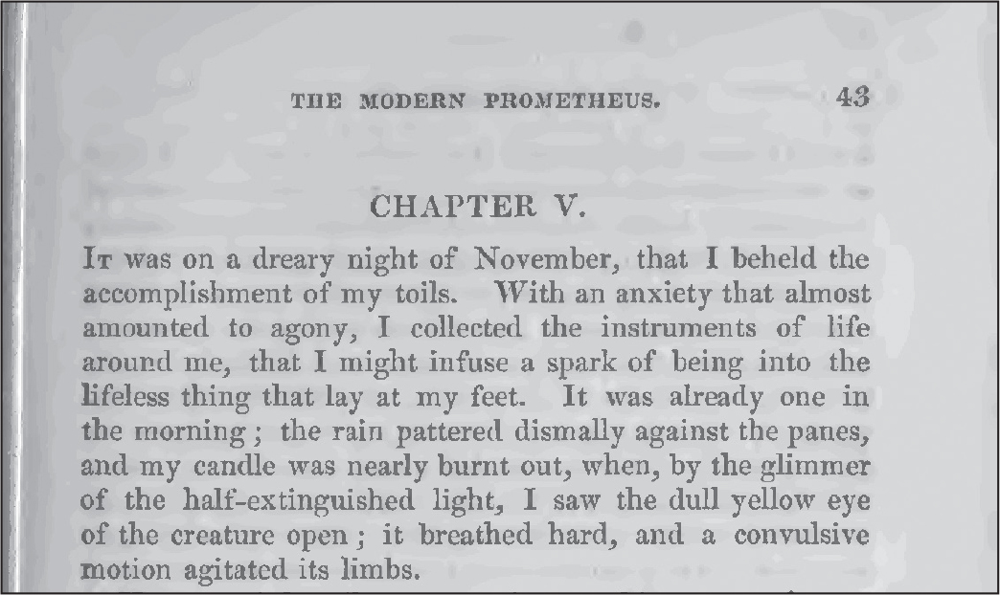
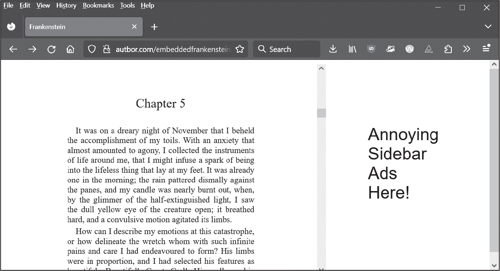

22 画像中の文字認識

文字認識とは画像からテキストを抽出することです。より正式には光学文字認識（OCR）と呼ばれます。Pythonにはテキストを処理する多彩な文字列メソッドと正規表現がありますが、文字列としてのテキスト入力がなければ始まりません。OCRは、道路標識、ATMに預け入れられた小切手、領収書などの文字を認識するのに使われます。
読み上げや音声認識と同様に、OCRでは高度なコンピュータサイエンスの技術を実行しますが、Pythonのモジュールではややこしい詳細を意識せず簡単に使えます。本章では、オープンソースのTesseract OCRエンジンを動かすPyTesseractパッケージを紹介します。PythonからTesseract OCRを利用してPDFファイルを作成できる、フリーのNAPS2アプリケーションにも言及します。
TesseractとPyTesseractのインストール
PyTesseractを動かすには、フリーのTesseract OCRエンジンソフトウェアをお使いのコンピュータにインストールしなければなりません。Windows、macOS、Linuxのそれぞれについてインストール方法を以下で説明します。英語以外の言語については言語パックを選んでインストールします。その上でPyTesseractパッケージをインストールすれば、PythonスクリプトからTesseractを利用できます。
Windows
Windowsでは、https://
Tesseractはデフォルトで英語の文字認識を行います。インストール中に"Additional script data (download)"と"Additional language data (download)"というチェックボックスをオンにすると、英語以外の文字や言語も認識できるようになります。すべての言語をインストールすると600MBほどのサイズになります。この言語パックではファイル名の.traineddata拡張子の前の部分でどの言語かが示されます。例えば、日本語でしたらjpn.traineddataです。容量を節約するためにチェックボックスで選択してインストールする言語を選べます。
インストールが終われば、PyTesseractがtesseract.exeプログラムにアクセスできるように、C:\Program Files\Tesseract-OCRフォルダ（またはTesseractをインストールした別のフォルダ）をPATH環境変数に追加してください。PATH環境変数の編集方法については第12章で説明しました。
macOS
HomebrewパッケージマネージャーでTesseractをmacOSにインストールできます。Homebrewはhttps://
Linux
ターミナルウィンドウを開いてsudo apt install tesseract-ocrを実行すればLinuxにTesseractをインストールできます。このコマンドを実行するには管理者パスワードの入力を求められます。
ターミナルからsudo apt install tesseract-ocr-allを実行すればすべての言語パックをインストールできます。言語パックを選択してインストールするなら、allの部分をISO 639言語コードに置き換えてください。例えばフランス語ならfra、ドイツ語ならdeu、日本語ならjpnです。
PyTesseract
Tesseract OCRエンジンをインストールしたら、次は付録Aの指示に従ってPyTesseractの最新版をインストールします。PyTesseractはPillow画像ライブラリもインストールします。
OCRの基礎
PyTesseractとPillow画像ライブラリを使うと、4行のコードで画像から文字を抽出できます。PyTesseractとPillowをインポートして、Image.open()関数で画像を開き、開いた画像をtess.image_to_string()関数に渡します。
基本的な例を見てましょう。私の本The Big Book of Small Python Projects (No Starch Press, 2021)の導入部のスクリーンショットから文字を抽出します。https://
>>> import pytesseract as tess
>>> from PIL import Image
>>> img = Image.open('ocr-example.png')
>>> text = tess.image_to_string(img)
>>> print(text)
This book provides you with practice examples of how programming
concepts are applied, with a collection of over 80 games, simulations, and dig-
ital art programs. These aren't code snippets; they're full, runnable Python
programs. You can copy their code to become familiar with how they work,
experiment with your own changes, and then attempt to re-create them on
your own as practice. After a while, you'll start to get ideas for your own pro-
grams and, more importantly, know how to go about creating them.
--snip--
画像中の文字を認識して文字列を取り出すには高度なアルゴリズムが必要ですが、Pythonはたった4行のコードでそれを実現できます。
画像の前処理
先ほど例を示した画像中の文字ではほぼ完璧に文字列を抽出できました。しかしOCRには限界があります。スクリーンショットのようなコンピュータが作成した画像とは異なり、紙をスキャンしたり撮影したりした画像には問題がある場合がありますし、現実世界を撮影した写真は文字を抽出するには複雑すぎます。例えば、車を後ろから撮影した画像中のナンバープレートの文字をTesseractで認識することはできません。ナンバープレート付近の画像をクロップ（切り抜き）したとしてもまだ読み取れないかもしれません。Tesseractは現実世界の写真や手書き文字よりも、印刷物に適しています。
スクリーンショットであってもOCRテキストは不完全だと考えて修正するようにしてください。特に以下のような問題があります。
- 行末のハイフンが残ってしまう（“dig-” “ital”や“pro-” “grams”など）
- 文字列にフォントやサイズの情報が残らない
- 文字列中の空白が本文と一致しない
- 小文字のjとiを間違えるなど文字認識が不完全
- 表や段組みがあると文字列の順序がごちゃごちゃになってしまう
数字の認識誤りは単語の認識誤りよりも発見しにくいので、特に注意してください。
Tesseractでは認識の問題を軽減する前処理を行いますが、Tesseractを使う前に画像編集プログラムで以下の前処理を行うと精度を高められる可能性があります。
- 段組みを避け、テキストの列ごとに別々の画像にする
- 手書きではなく活字を対象にする
- 装飾的なフォントではなく一般的なフォントを用いる
- テキストが傾かないように画像を回転させる
- 黒地の背景に白色のテキストではなく、白地の背景に黒色のテキストにする
- 画像の端の枠線を除去する
- 画像の端まで文字があるなら余白を設ける
- 画像の輝度とコントラストを調整してテキストが背景から際立つようにする
- 画像のノイズを除去する
PythonでOpenCVライブラリを使うとこうした処理を自動的に行えます。https://
大規模言語モデルを活用して誤りを修正する
OCRではスペースや文字単位の誤りが発生しやすいです。スペルチェックでは、正しく認識した元画像のスペルミスを誤りだと指摘したり、誤って認識した正しいスペルの単語を見逃したりするので、そうした誤りを発見しづらいです。OCRで起こりがちなこの種の誤りを発見するには文脈と常識が必要になります。
これはまさにChatGPT、Gemini、LLaMAなどの大規模言語モデル（LLM）AIが得意とする問題です。例えば、図22-1はメアリー・シェリーの小説『フランケンシュタイン』のスキャン画像です。このページは1831年に印刷されたものであるため、紙にしわがあり黄ばんでいますし、インクがかすれている部分もあります。本書のオンライン素材からこのfrankenstein.pngをダウンロードできます。

図 22-1：1831年に印刷されたメアリー・シェリーの『フランケンシュタイン』をスキャンした画像
前処理なしでTesseractは以下の文字を認識しました。
>>> import pytesseract as tess
>>> from PIL import Image
>>> img = Image.open('frankenstein.png')
>>> text = tess.image_to_string(img)
>>> print(text)
THE MODERN PROMETHEUS. 43
CHAPTER V.
Iv was on a dreary night of November, that I beheld the
accomplishment of my toils. With an anxiety that almost
amounted to agony, I collected the instruments of life
around me, that I might infuse a spark of being into the
lifeless thing that lay at my feet. It was already one in
the morning ; the rain pattered dismally against the panes,
and my candle was nearly burnt out, when, by the glimmer
of the half-extinguished light, I saw the dull yellow eye
of the creature open ; it breathed hard, and a convulsive
Motion agitated its limbs.
まずまずですが、段落の冒頭で'IT'ではなく'Iv'としているのと、最後の行で'motion'ではなく'Motion'としている箇所が誤っています（言語パックがアップデートされると結果が変わるかもしれません）。
以下のプロンプトでLLMにこの誤りを修正してもらいましょう。
次のテキストはOCRの出力結果です。スペースや文字の認識誤りを修正してください。原文に含まれるスペルミスや文法の誤りは修正しないでください。段落を一行にして、行末のハイフンで区切られた単語を元に戻してください。OCRの説明などは不要で、修正後のテキストだけを出力してください。以下テキストを示します。
THE MODERN PROMETHEUS. 43
CHAPTER V.
Iv was on a dreary night of November, that I beheld the ...
このプロンプトでLLMは以下のように出力しました。
THE MODERN PROMETHEUS. 43
CHAPTER V.
It was on a dreary night of November that I beheld the accomplishment of
my toils. With an anxiety that almost amounted to agony, I collected the
instruments of life around me, that I might infuse a spark of being into
the lifeless thing that lay at my feet. It was already one in the morning;
the rain pattered dismally against the panes, and my candle was nearly burnt
out, when, by the glimmer of the half-extinguished light, I saw the dull
yellow eye of the creature open; it breathed hard, and a convulsive motion
agitated its limbs.
LLMは'Iv'を'It'に、'Motion'を'motion'に修正しました。行末のハイフンで区切られた単語を元に戻し、改行が取り除かれています。これでテキストをWord文書やメールにコピーアンドペーストしやすくなりました。たいていのオンラインのLLMにはAPIがありますから、プログラムから直接プロンプトを送って応答を取得することで、このLLMによる修正を自動化できます。LLMをローカルPCで実行しているのでなければ（その方法の説明は本書の範囲外です）、オンラインのLLMサービスに登録しなければならないでしょう。これくらいであれば無料枠で実行できるかもしれませんし、従量課金されるかもしれません。
LLMは自信過剰になりがちだという点に注意してください。出力を必ず検証してください。出力されたテキストは誤りを見逃しているかもしれませんし、不要な修正をしているかもしれませんし、新しい誤りを作り出しているかもしれません。機械の出力を確認する人間が必要です（人間は間違えやすいので、1人目の人間の作業を確認する2人目の人間が必要かもしれません）。
英語ではない言語の文字認識
Tesseractはデフォルトでは文字が英語だと想定しますが、別の言語を指定することができます。「TesseractとPyTesseractのインストール」の指示に沿って英語以外の言語パックをインストールできます。対話型シェルで以下を実行すればインストールした言語パックを確認できます。
>>> import pytesseract as tess
>>> tess.get_languages()
['afr', 'amh', 'ara', 'asm', 'aze', 'aze_cyrl', 'bel', 'ben', 'bod', 'bos',
--snip--
'ton', 'tur', 'uig', 'ukr', 'urd', 'uzb', 'uzb_cyrl', 'vie', 'yid', 'yor']
リスト中の文字列は原則として3文字のISO 639-3言語コードです。例えば、'aze'はラテン文字のアゼルバイジャン語で、'aze_cyrl'はキリル文字のアゼルバイジャン語です。詳細はTesseractのドキュメントをご参照ください。
英語ではないテキストの画像では、langキーワード引数にこれらの言語コードを示す文字列を渡します。例えば、frankenstein_jpn.pngは『フランケンシュタイン』の日本語訳です。本書のオンライン素材からこのファイルをダウンロードして、対話型シェルに以下の内容を入力してください。
>>> import pytesseract as tess
>>> from PIL import Image
>>> img = Image.open('frankenstein_jpn.png')
>>> text = tess.image_to_string(img, lang='jpn')
>>> print(text)
第 5 剖 私が自分の労苦の成果を目の当たりにしたのは、11 月の芝鬱な夜でした。 ほとんど苦
痛に等しい不安を抱えながら、 私は足元に横たわる生命のないものに存在の輝きを吹き込むこ
--snip--
だ有目、 しわが寄った顔色、 そしてまっすぐな黒い大と、 より恐ろしいコントラストを形成した
だけでした。
以下のように日本語ではなく英語を指定すると、image_to_string()は日本語の文字と一番似ている英語の文字を推測して返します。認識しようとしている文字は英語ではありませんから、意味不明なテキストが返されます。
>>> import pytesseract as tess
>>> from PIL import Image
>>> img = Image.open('frankenstein_jpn.png')
>>> text = tess.image_to_string(img, lang='eng')
>>> print(text)
BS FABADOABOMEE AOYEVICLEDIL, 1 ADBBERKCLE, (ELA ER
WISE LW ABBA A TRA B, ALE TIRE DO EMO REVS DICED MS EKA
--snip--
複数言語のテキストを認識するなら、'+'記号で言語コードをつなげてimage_to_string()関数のlangキーワード引数に渡します。例えば、tess.image_to_string(img, lang='eng+jpn')とすると、英語と日本語の両方を認識します。
NAPS2スキャナアプリケーション
PyTesseractは画像から文字を抽出するのに便利ですが、OCRを使って画像から本文をテキスト検索できるPDF文書を作成したい場合が多いです。それを実現できるアプリがいろいろありますが、大量の画像からPDFを自動的に作成することはできないアプリが多いでしょう。オープンソースのNAPS2（Not Another PDF Scanner 2）アプリをおすすめします。スキャナを制御できるだけでなく、Tesseractを実行してPDF文書に文字を埋め込めます。Windows、macOS、Linuxで利用でき、機能がシンプルなフリーソフトです。NAPS2は、物理的なスキャナを使わずに複数の画像をPDFファイルにまとめて文字を埋め込むことができます。Tesseractの高度な機能も使えますから、テキスト文字列をPDFのページの正しい位置に埋め込めます。Pythonスクリプトから実行することもできます。
NAPS2のインストールと設定
https://
インストールできればデスクトップアプリとしてNAPS2を実行できます。WindowsではスタートメニューからNAPS2を選びます。macOSではSpotlightからNAPS2を実行します。Linuxでは新しいターミナルウィンドウを開いてflatpak run com.naps2.Naps2を実行します。本書では、GUIのデスクトップアプリではなく、Pythonのコードからsubprocessモジュールを利用してNAPS2を使います。
NAPS2のPythonからの実行
Pythonのスクリプトでsubprocessモジュールを使い、コマンドライン引数を指定してNAPS2アプリケーションを実行します。このように実行すればNAPS2のアプリケーションウィンドウが開かないので、Pythonスクリプトによる自動化の一環として活用しやすいです。
もう一度frankenstein.png画像を使ってOCRテキストを埋め込んだPDFをNAPS2で作成してみましょう。NAPS2プログラムの場所はOSごとに異なります。以下はWindowsのパスを指定した対話型シェルでのコード例です。
>>> import subprocess
>>> naps2_path = [r'C:\Program Files\NAPS2\NAPS2.Console.exe'] # Windows
>>> proc = subprocess.run(naps2_path + ['-i', 'frankenstein.png', '-o',
'output.pdf', '--install', 'ocr-eng', '--ocrlang', 'eng', '-n', '0', '-f',
'-v'], capture_output=True)
macOSではパスを指定している行をnaps2_path = ['/Applications/NAPS2.app/Contents/MacOS/NAPS2', 'console']としてください。Linuxではnaps2_path = ['flatpak', 'run', 'com.naps2.Naps2', 'console']です。
このコードでは、frankenstein.pngの画像から抽出したテキストを含む1ページのoutput.pdfという名前の新しいファイルが作成されます。このファイルをPDFアプリケーションで開くと、テキストを選択してクリップボードにコピーできます。PDFアプリケーションによっては、OCRで認識したテキストを.txtのテキストファイルとして保存できます。
この例のコマンドライン引数を一つずつ見ていきましょう。これを理解すれば必要に応じてコマンドライン引数を調整できます。
'-i', 'frankenstein.png' 入力をfrankenstein.png画像ファイルと指定しています。複数ファイルを入力に指定する方法については、次節の「入力の指定」を参照してください。
'-o', 'output.pdf' OCR結果を含めた新しいファイルをoutput.pdfという名前で作成します。
'--install', 'ocr-eng' OCR用に英語の言語パックをインストールします。すでにその言語パックがインストールされていれば何も行いません。言語パックをインストールしたい場合は、ocr-のあとに3文字のISO 639言語コードをつけてください。
'--ocrlang', 'eng' OCRで認識する言語に英語を指定します。この引数はそのままTesseractのコマンドライン引数に渡されますから、'eng+jpn+rus'のような引数で英語と日本語とロシア語を指定できます。
'-n', '0' 物理的なスキャナを使わないことを指定します。これにより物理的なスキャナがコンピュータに接続されていなくてもエラーメッセージが表示されません。
'-f' NAPS2が同名のファイルがあってもoutput.pdfという出力ファイルを上書きします。
'-v' 冗長モードを有効にします。NAPS2がPDFを作成する際に状態を示すテキストが表示されます。その状態を示すテキストを確認したければ、subprocess.run()のキーワード引数をcapture_output=Trueではなくcapture_output=Falseとしてください。
NAPS2のコマンドライン引数については、https://
入力の指定
NAPS2はPDFと大部分の画像フォーマットからPDFを作成できます。コマンドライン引数の-iのあとに独自のミニ言語で複数の入力を指定します。これは複雑になることがありますが、Pythonのインデックスとスライスの記法が使える、セミコロン区切りの複数指定だと考えてください。
セミコロンで区切って複数のファイルを指定します。例えば、'-i', 'cat.png;dog.png;moose.png'を渡すと、1ページ目はcat.png、2ページ目はdog.png、3ページ目はmoose.pngのPDFを作成します。
Pythonのリストのスライス構文と同じ構文を使ってPDFのページを指定することもできます。PDFのファイル名のあとに角かっこで入力に使うページ数を指定します。Pythonと同じように、0が最初のページです。例えば、'-i', 'spam.pdf[0];spam.pdf[5];eggs.pdf'を渡すと、spam.pdfの1ページ目、spam.pdfの6ページ目、eggs.pdfの全ページからなるPDFを作成します。
スライス記法でページの範囲を指定することもできますし、負の数でPDF文書の末尾からページを指定することもできます。例えば、'-i', 'spam.pdf[0:2];eggs.pdf[-1]'を渡すと、spam.pdfの最初の2ページとeggs.pdfの最後のページからなるPDFを作成します。
NAPS2にはまだほかにもコマンドライン引数があります。それらについてはオンラインドキュメントを参照してください。NAPS2がお気に召さなければ、https://
まとめ
本章では、Tesseractの力を借りて画像からテキストを抽出する方法を説明しました。データ入力に費やす時間を大いに節約できる可能性を秘めています。しかしOCRは魔法ではありません。正確な結果を得るには画像の前処理が必要になることがあります。Tesseractは白い背景に活字がきれいに並んだ画像で動作するように設計されています。また、画像のテキストがどの言語であるかも把握する必要があります。大規模言語モデルAIが誤認識の修正に役立ちますが、人間が出力をチェックしなければなりません。オープンソースのNAPS2アプリケーションを利用すると複数の画像からOCRテキストを埋め込んだ一つのPDFを作成できます。OCRはコンピュータサイエンスの画期的な技術ですが、利用するのに学位は必要ありません。誰でもPythonからOCRを利用できます。
練習問題
1. Tesseractはデフォルトでどの言語を認識しますか？
2. PyTesseractが動作するのに必要なPythonの画像ライブラリは何ですか？
3. Imageオブジェクトを取りその画像に含まれる文字列を返すPyTesseractの関数は何ですか？
4. 道路標識の写真からTesseractで文字を抽出することはできますか？
5. Tesseractでインストールされている言語パックのリストを返す関数は何ですか？
6. 画像に英語と日本語のテキストが含まれているときにPyTesseractで指定するキーワード引数は何ですか？
7. OCRテキストを埋め込んだPDFを作成できるアプリケーションは何ですか？
練習プログラム：ブラウザテキストスクレイパー
テキストを見ることはできても保存したりコピーしたりするのが難しいウェブサイトがあります。ウェブページにPDFを埋め込んでいるように見えるページもあります。図22-2に示すように、https://

図 22-2：文書を埋め込んだウェブページ例
第23章で説明するPyAutoGUIライブラリを使うとスクリーンショットを画像として保存できますし、第21章で説明したPillowライブラリを使うと画像をクロップできます。PyAutoGUIには画面のXY座標を調べるMouseInfoアプリケーションもあります。
スクリーンショットを取得して、そのスクリーンショット画像のテキスト部分をクロップし、PyTesseractaに渡してOCRでテキストを抽出するocrscreen.pyという名前のプログラムを書いてください。output.txtという名前のテキストファイルに認識したテキストを追記します。ocrscreen.pyプログラムのひな型を示します。
import pyautogui
# TODO - 必要なimport文を追加
# テキスト部分の座標必要に応じて修正
LEFT = 400
TOP = 200
RIGHT = 1000
BOTTOM = 800
# スクリーンショットの取得
img = pyautogui.screenshot()
# スクリーンショットのテキスト部分をクロップ
img = img.crop((LEFT, TOP, RIGHT, BOTTOM))
# クロップした画像についてOCRを実行
# TODO - PyTesseractのコードをここに追加
# output.txtの末尾にOCRテキストを追記
# TODO - 追記モードでopen()を呼び出してOCRテキストを追記
テキストが埋め込まれていてブラウザで見ることができるのだけれども保存できないページをスクロールさせてテキストを表示し、このプログラムを実行すると、テキストを取得できます（第23章を読めばキーの押下をシミュレートしてウェブページをスクロールさせるスクリプトを書くこともできます）。